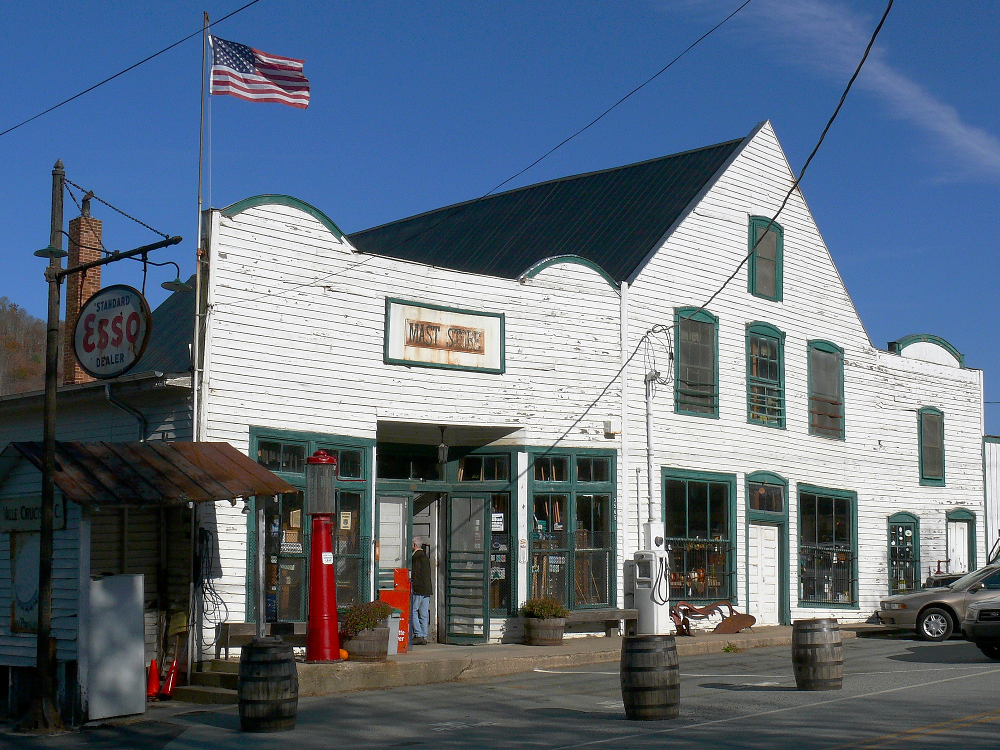

The Mast General Store has a rich history and an even richer selection of food, snacks, and curated gear that would be all any traveler needs.
This map offers an alternate route to reach the NC/TN border. You can expect to make a stop at all of the North Carolina locations of the Mast General Store including the original location in Valle Crucis, NC. Not only will you have the best road snacks to eat on your trip, you'll also be able to explore the towns of Boone, Valle Crucis, Asheville, Hendersonville, and Waynesville, North Carolina.
Click on the markers to get the full address of each store location.
Hungry yet? Check out the candy selection!